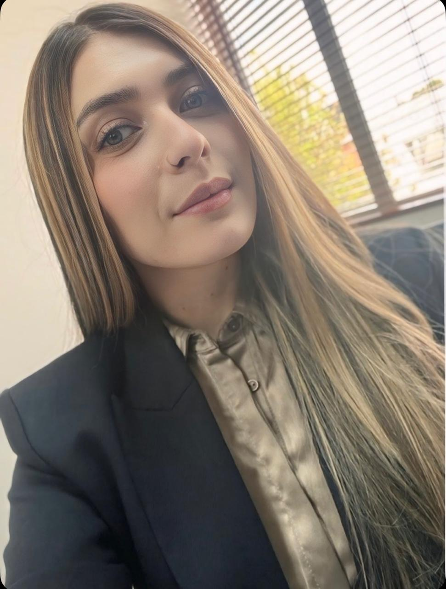

KATHERIN GISETH CASTILLO CARO

Soy estudiante de desarrollo web apasionada por el aprendizaje constante. Actualmente estoy adquiriendo conocimientos en HTML y CSS, lo que me permite crear interfaces web estructuradas y visualmente atractivas. Tengo experiencia académica utilizando Visual Studio Code como entorno de desarrollo, así como el uso de GitHub para el control de versiones y la organización de mis proyectos. Me caracterizo por ser responsable, dedicada y con gran interés en seguir creciendo en el área tecnológica, enfrentando nuevos retos y fortaleciendo mis habilidades día a día.
Habilidades
- HTML
- CSS
- GitHub
- Visual Studio Code
- Git básico
- Responsabilidad
- Aprendizaje rápido
- Trabajo en equipo
Objetivo
Mi objetivo es seguir aprendiendo y desarrollando mis habilidades en el área del desarrollo web, con el fin de crear páginas funcionales y visualmente atractivas, y crecer profesionalmente en el mundo tecnológico.
Intereses
Interesada en el desarrollo web, diseño de interfaces y aprendizaje de nuevas tecnologías.